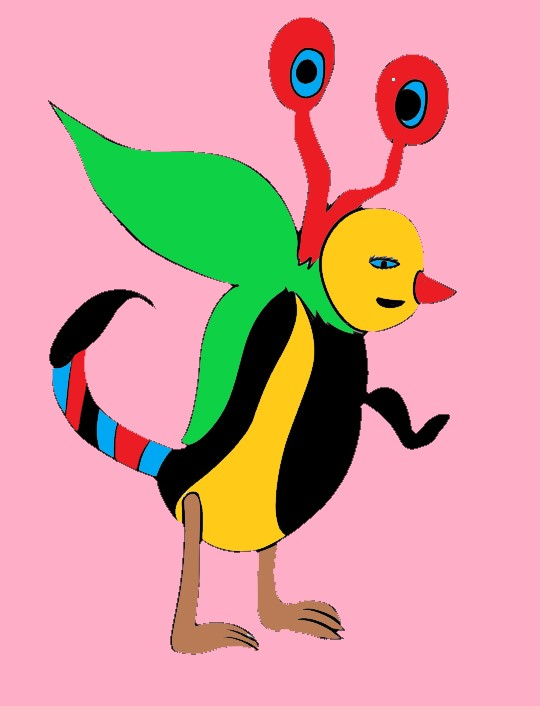

¿Sabías qué?
El alebrije es una artesanía de origen mexicano la cual fue creada por Pedro Linares López mientras dormía por causa de una enfermedad, en donde se le aparecieron estos animales con diferentes combinaciones como ahora son conocidos los alebrijes y después de ese sueño profundo fue cuando plasmó estas figuras las cuales hoy en día se han elaborado y hecho con diferentes técnicas pero esto no es todo también con el paso del tiempo los alebrijes también han ayudado en el campo de la medicina y de la neurociencia, pero eso no es todo el alebrije es una artesanía mexicana un tanto surrealista que puede estar elaborada de cartón, papel o madera. 
Recuerda que A. Einstein dijo:
-Confía.
Si puedes imaginar, lo puedes lograr.